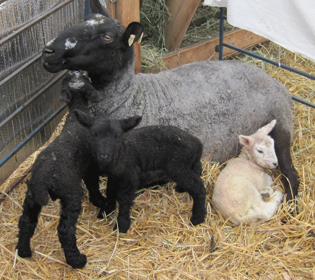
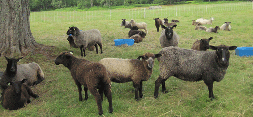

|  | |||||||||||
| Blaze in mid April with her new triplets. |
|||||||||||
| In praise of beer... In August 2018 during a drought, I had a ewe, who had triplets, develop a severe case of mastitis (udder infection). She stopped eating, a very serious situation and difficult to get sheep to begin eating again. It was going on six days and I thought I would lose her. I went online and found an article in Countryside Magazine where the woman’s ram had not eaten for seven days and she was in a panic. She was ready to have her husband dig a hole. She tried everything to save him and then as a last try gave him one beer a day for three days, and then he began to eat. In retrospect she thought unpasteurized beer would work better, and part of the problem was he was dehydrated. |
|||||||||||
| So, I gave the ewe a homeopathic remedy for mastitis and a 12 oz. bottle of beer (a good stout!) in the morning with a dosing syringe. At first she was not sure what the beer was, but then really sucked it down. That night she had another bottle, and the next morning another bottle. That evening when I checked the sheep and looked at the ewe... she was eating!!!! She recovered and gained back her weight. WOW! |
|||||||||||
|  | |||||||||||
| A difficult year…There was no spring, summer, or fall rain till September 10. After the first grazing, the grass grew slow or not at all. Sheep were supplemented with hay (in the blue pans) from late June through the summer. Fresh grass is vital to keep the nursing ewes healthy and the lambs growing. | |||||||||||